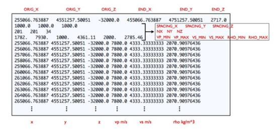
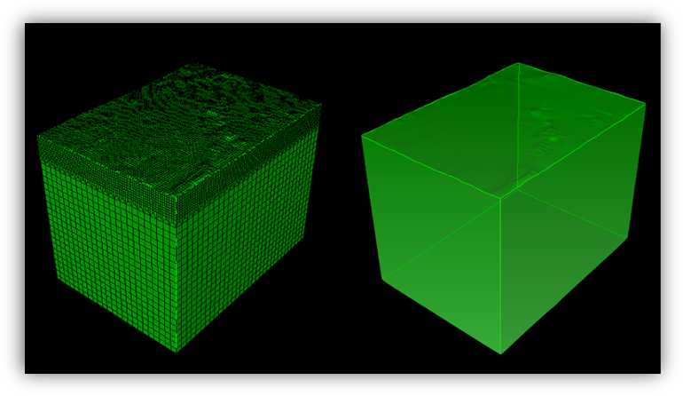
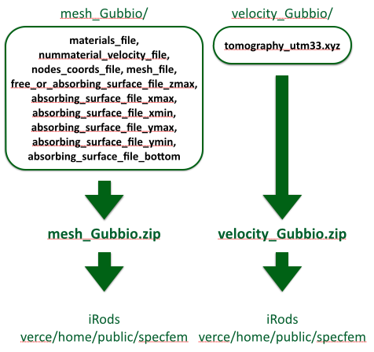
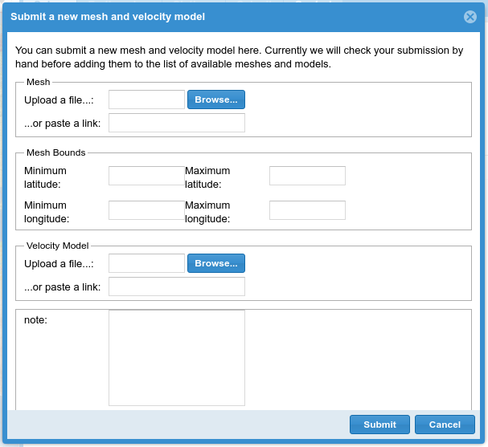
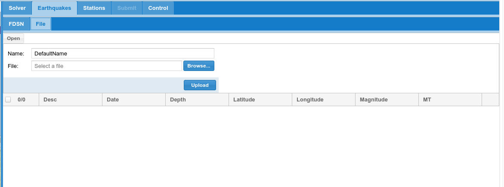
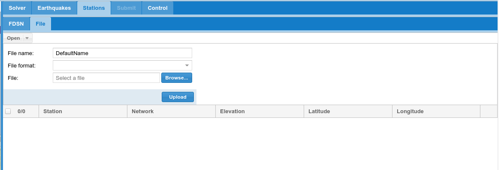
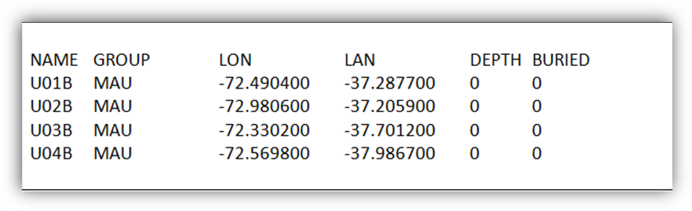

8. Running SPECFEM3D_Cartesian simulations using your own data¶
So far we have covered how to run a relatively simple simulation using data that are already loaded into the portal. While we hope to keep increasing the areas where meshes and models are currently available, it is also essential that users can upload their own velocity models, meshes, earthquake catalogues and station locations. In this section we will give a brief overview of what is needed for each of these inputs, and how they are submitted to the portal.
8.1 Creating your own velocity model¶
All of the velocity models currently loaded into the VERCE portal are based on regional travel time tomography models of the concerned area. It would be possible to construct an input velocity model based on a surface wave tomography or noise tomography, or even from a velocity model produced from active seismic techniques based on refraction or reflection seismic surveys. If you are interested in running a full waveform simulation in a new area, you will therefore acquire a published velocity model, or use a preliminary model from your own work or collaborations.
The new velocity model should be defined in a 3D grid of points and the corresponding input file for the portal should be formatted as shown below (Figure 8.1) and saved as a text file, usually called tomography file.
The velocity model you submit should be based on your tomography, and should deviate back to the regional or global 1D starting model at the edges of the 3D volume. The tomography file should be formatted as shown in the below (Figure 7.1), and saved as a text file.
The grid spacing defined on the second row of the file depends upon the frequency of seismic wave you intend to simulate, as described in section 8.2. Once this file has been created, the velocity model can be uploaded along with the corresponding mesh as described in section 8.3.
The variables input into the velocity model text file are defined as follows.

Figure 8.1: Format for an input velocity model. Image re-produced from the SPECFEM manual.
ORIG_X, ORIG_Y, & ORIG_Z: are the coordinates of the initial grid points in the tomographic model in the x, y and z directions respectively.
END_X, END_Y, & END_Z: are the coordinates of the final grid points in the tomographic model in the x, y and z directions respectively.
SPACING_X, SPACING_Y, & SPACING_Z: describe the spacing between points of the tomography file in the x, y and z directions respectively.
NX, NY, & NZ: describe the number of grid points in the x, y and z directions respectively.
VP_MIN & VP_MAX: describe respectively the minimum and maximum P-wave velocity of the input file in ms:sup:`-1`.
VS_MIN & VS_MAX: describe respectively the minimum and maximum S-wave velocity of the input file in ms:sup:`-1`.
RHO_MIN & RHO_MAX: describe respectively the minimum and maximum density of the input file in kg/m:sup:`3`.
8.2 Creating a bespoke mesh for your area¶
Creating a mesh is the most complicated step in setting up a simulation in a new area. The mesh must be created so that it can account for the frequency of seismic waves at the seismic velocities that are found in the velocity model defined above.
8.2.1 Meshing parameters¶
The spacing of the grid (\({\Delta}h\)) depends upon the minimum seismic velocity in the wave speed model (\(v_{\min}\)) and the frequency (\(1/To,\)) to which you wish to resolve the wavefield in your simulations as shown in the equation below (Komatitsch et al., 2005):
where \(\text{To}\) is the shortest period that can be resolved, and \(n\) is the degree of polynomials used to represent the wave field in the spectral element method. Seismic velocity usually increases with depth, thus, in order to have the same resolution everywhere in the model, element size should increase.
The time integration algorithm used by SEM to solve the seismic wave equation is conditionally stable, i.e. there exists an upper limit to the value of the time step over which the calculations become unstable. The stability condition, namely the Courant stability condition, is given by (Komatitsch et al., 2005):
where \({(\ \frac{{\Delta}h}{v}\ )}_{\min}\) denotes the minimum ratio between the grid spacing and the P-wave velocity, and \(C_{\max}\) is the highest possible value of the Courant number. Based on equation (1), equation (2) can be written as
Finally, the mesh should also account for the topography of the Earth’s surface, or bathymetry if the modelled area includes oceanic areas.

Figure 8.2: Example of a hexahedral mesh built using GEOCUBIT. On the left of the figure we can see that the grid spacing increases with depth as the wave speed increases. The top surface of the mesh represents the topography of the area to be modelled.
8.2.2 Meshing software¶
Meshes that can be used with SPECFEM3D_Cartesian and within the portal can be produced using CUBIT/ TRELIS software. Unfortunately the CUBIT/TRELIS software is not free, although a 30 day trial licence can be downloaded. Full details of the commercial software can be found at the following link.
This software is then used in conjunction with the free python based GeoCubit software developed at the INGV:
https://github.com/geodynamics/specfem3d/tree/devel/CUBIT_GEOCUBIT
A full description of how to create a mesh for SPECFEM3D_Cartesian implemented into the VERCE platform can be found here:
http://verce.eu/Training/UseVERCE/2015-7-VERCE-hexmeshing101.pdf
8.3 Submitting a mesh and a velocity model¶
Once you have produced your mesh, you can take the ten mesh files listed in figure 8.3.1 and put them into a folder named ‘mesh_MySimulationArea’, where ‘MySimulationArea’ is the name of the area you are studying. Then, zip this folder in a single zip file named ‘mesh_ MySimulationArea.zip’.
Do the same with the tomography file formatted as outlined in section 8.1. The tomography file can have whatever name you want but must be put in a folder named ‘velocity_ MySimulationArea’. Finally, zip this folder in a single zip file named ‘velocity_ MySimulationArea.zip’, as shown in Figure 8.3.1.

Figure 8.3.1: Creating the zip files needed to upload a new model to the VERCE platform. The left hand side shows the 10 mesh files that need to be included and uploaded. The right hand side shows the single velocity file that needs to be uploaded, along with the naming conventions for these files.
Once these zip files have been created, they can be uploaded by clicking the link labelled ‘*Click here to submit a new mesh and velocity model’* in the solver tab of the forward modelling page. This will bring up the parameter form shown in figure 8.3.2. The zipped mesh and velocity model files can then be uploaded to the portal from the local machine. The limits of the mesh area in latitude and longitude should also be input in the ‘mesh bounds’ section of the pop-up window. Finally click ‘Submit’ for the mesh and velocity model to be uploaded to the portal. The meshes and models are manually validated before they are made available to you and to all the users, so it can take several days for the mesh and model to be uploaded and ready to use.
It is of course possible to upload meshes and models that only you or your group of users can use. In this case please specify it in the note box at the bottom of the parameter form.

Figure 8.3.2: The parameter form for inputting a new mesh and model into the VERCE platform.
8.4 Submitting a new earthquake catalogue¶
If you wish to submit your own earthquake catalogue, you can do this on the ‘File’ tab of the ‘Earthquakes’ page shown in figure 8.4. The catalogue must be uploaded in quakeML format. The easiest way to convert other earthquake catalogue formats to quakeML is using ObsPy. The earthquakes must have full details of the location and focal mechanism of all the events you are interested in modelling.
The ObsPy command ‘readEvents’ can be used to read in events that are in a range of text based formats (e.g. NDK & ZMAP). The event data can then be written to a quakeML file using ‘writeQuakeML’. Full details on how to install ObsPy and access tutorials on ObsPy are given in appendix 3.

Figure 8.4: The input form for bespoke user input earthquake catalogues.
8.5 Submitting a new station catalogue¶
New seismic stations and networks can be input in a similar way using the upload form under the ‘File’ tab in the ‘Stations’ section shown in figure 8.5.1.
The format of the input station file can be a simple list of station name, group (i.e. network name), longitude, latitude, depth and meters buried. Figure 8.5.2 shows an example of the station locations for the temporary Maule network in Central Chile, which is already loaded into the platform. Alternatively, the station file can be uploaded as an xml file by selecting this format in the drop down menu and choosing your appropriate file.

Figure 8.5.1: The input form for new seismic station networks.

Figure 8.5.2: The input format for stations and networks to be added to the VERCE platform.